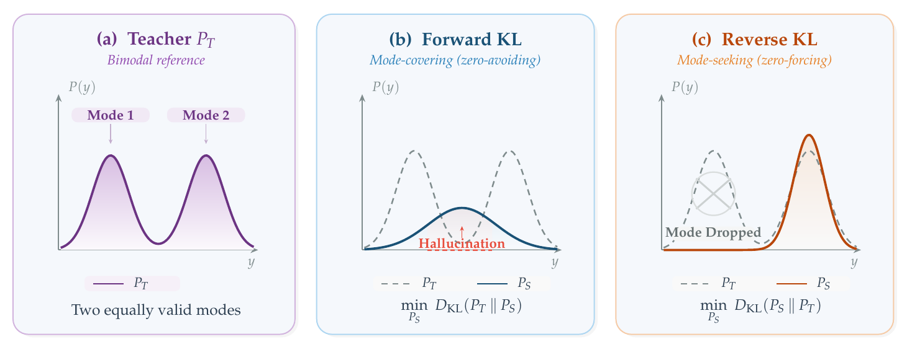
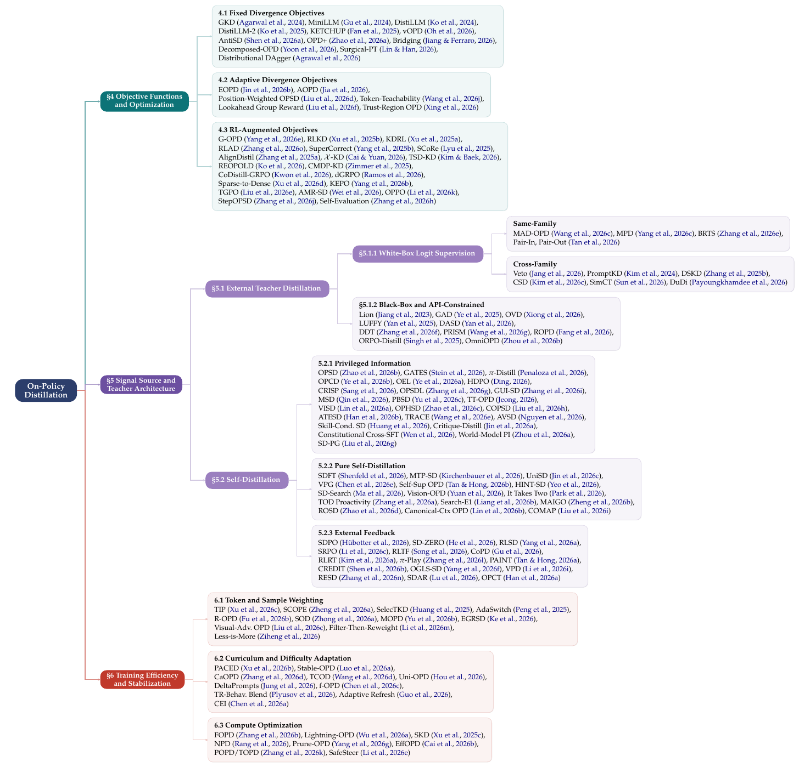

GKD
fixed用 πmix = λpθ + (1-λ)pdata 在离线和纯 on-policy 之间插值，可测试 FKL、RKL、JSD。
意义：把 DAgger 式 on-policy imitation 正式带入 LLM 蒸馏。
一篇把 OPD 从“若干训练技巧”整理成统一范式的综述：学生自己生成轨迹，教师在这些真实轨迹上反馈，目标是把离线模仿里的 exposure bias 改造成可训练、可诊断、可工程化的闭环。
离线蒸馏让学生看“教师的完美前缀”；OPD 让学生在自己的错误轨迹上接受教师反馈。
论文把 OPD 形式化为学生采样轨迹上的 f-divergence 最小化，并按三条设计轴整理文献：目标函数、信号来源、训练动态。最重要的结论不是“OPD 总是更好”，而是：当任务长、推理链复杂、学生会走出静态教师数据覆盖范围时，OPD 的额外算力才更可能换来质量。
传统知识蒸馏训练学生匹配教师在固定数据上的分布。对自回归 LLM 来说，问题出在前缀：训练时前缀来自数据或教师，推理时前缀来自学生自己。
学生在 y < t 这些“干净前缀”上学习下一个 token。只要推理时也总能处在这些状态附近，损失函数和部署分布就大致一致。
学生一旦早期生成偏离教师轨迹，后续状态就变成训练里很少见的前缀。推理越长，偏差越容易滚雪球。
让学生当前策略 pθ 生成训练样本，再让教师对这些样本打分或给分布。训练分布随学生一起移动。
论文的关键整理是：许多看起来不同的 OPD 方法，都可以放进“学生轨迹采样 + 局部 f-divergence 匹配”这个骨架。

偏 mode-covering。适合开放式生成、翻译、摘要这类多个答案都合理的场景；风险是学生容量不够时会把多个模式糊在一起。
偏 mode-seeking。适合数学、代码、结构化输出这类更需要收敛到正确路径的场景；风险是 Pass@1 上升但 Pass@k 多样性下降。
同一条序列里，运算符 token 和连接词 token 的分布形状不同。EOPD、AOPD 这类方法按 token 局部状态切换损失。
论文没有按“像不像”分类，而是按训练管线中的三个决定分类：优化什么、信号从哪里来、训练如何稳定和省算力。

固定 divergence、按 token 自适应 divergence、RL-augmented objective。它回答“学生到底在优化什么”。
白盒 logits、黑盒 API、self-distillation、privileged information、verifier feedback。它回答“教师信号从哪里来”。
token weighting、curriculum、prefix truncation、offline cache、teacher refresh。它回答“这个闭环怎样不坏、怎样不贵”。
这篇综述覆盖的工作很多，真正需要记住的是每类方法解决的“局部痛点”。下面是高频方法的速查版。
fixed用 πmix = λpθ + (1-λ)pdata 在离线和纯 on-policy 之间插值，可测试 FKL、RKL、JSD。
意义：把 DAgger 式 on-policy imitation 正式带入 LLM 蒸馏。
sequence把 Reverse KL 提到序列级，用 REINFORCE 处理学生分布在期望内部的问题。
意义：说明序列级蒸馏和 policy gradient RL 其实挨得很近。
stability使用 Skew KL，把目标分布替换成教师和学生的混合，避免 KL 零概率爆炸。
意义：用数值稳定性工程解决纯 KL 在 on-policy 探索中的脆弱性。
adaptiveEOPD 按教师熵决定 FKL/RKL 混合；AOPD 按 advantage 符号在 policy gradient 和局部 FKL 间切换。
意义：从“选哪个 KL”推进到“哪个 token 用哪个 KL”。
RL把 OPD 写成 dense KL-constrained RL；当放大教师相对参考策略的 log-ratio 奖励时，学生可能探索到教师低概率但高回报的解。
意义：把 distillation ceiling 和 RL exploration 接起来。
dense每个 token 得到完整词表分布，信号密度最高，适合同组织、同 tokenizer 或可做跨 tokenizer 对齐的训练。
代价：教师 co-host、全词表 logits 传输、显存压力。
API无法拿 logits 时，用文本 critique、分数、rubric、adversarial discriminator 等替代稠密分布。
意义：牺牲信号密度，换取可使用闭源强教师的部署灵活性。
self PI同一个模型在训练时看 ground-truth answer，形成 PI-conditioned self-teacher；部署时学生只看原问题。
论文特别提醒：它更像“压缩已会的正确轨迹”，不稳定承担“纠正错误轨迹”。
feedback把 verifier 的二元结果、单元测试错误或文本反馈转成 dense self-supervision。
意义：给 self-distillation 加外部锚点，避免只强化自己的偏见。
weightTIP 用学生熵和师生 divergence 找出重要 token；SCOPE 按 rollout 正误走不同损失路径。
意义：不是每个 token 的教师信号都可靠，尤其在错误前缀之后。
curriculumPACED 把训练集中在学生 pass rate 居中的题；TCOD 逐渐扩大多轮轨迹中接受监督的深度。
意义：避免太难无梯度、太易无信息、太深教师信号失真。
computeFOPD 只对早期高信息密度 token 做 on-policy；Lightning-OPD 预计算教师 log-prob 降低在线教师成本。
意义：把“必须全程 on-policy”改成可调的 fidelity-efficiency frontier。
这是一篇综述，没有统一复现实验，因此不能把表格里的不同方法直接横向当 leaderboard。更合理的读法是提炼跨论文反复出现的证据模式。
这篇综述最实用的部分，是把 OPD 会坏在哪里讲得很具体。下面这些模式基本就是调 OPD pipeline 的排查清单。
学生早期生成错 token 后，教师被迫在 OOD 前缀上给分布。这个分布可能并不可靠，直接匹配会把错误扩散。
学生对某类题几乎全错或几乎全对时，梯度信息都很弱。PACED 的边界难度采样就是为这个问题服务。
过强 Reverse KL 会让 Pass@1 变好但 Pass@k 变差，学生只保留一条固定解题路径。
OPD 可能让模型更会做题，却更不知道自己什么时候错。安全和高风险场景不能只看 accuracy。
纯 self-distillation 容易强化已有偏见。没有 verifier 或 PI 时，模型很难知道自己的高置信错误是错误。
多轮 agent 中，错误 action 会改变环境状态；教师监督、轨迹结构和奖励粒度必须一起设计。
OPD 不是“更高级的蒸馏默认项”，而是一笔算力投资：只有当静态数据覆盖不了学生未来会访问的状态时，这笔投资才更可能划算。
不是 KL 损失本身，而是训练样本来自哪里。普通 KD 在固定数据或教师生成 traces 上训练；OPD 让学生当前策略生成样本，再让教师对这些样本反馈。换句话说，OPD 把“模仿答案”变成“在自己的状态分布里练习纠错”。
它解释了长序列中错误会随轨迹长度放大的几何原因。但 LLM 的教师并不一定能在任意学生错误前缀上给出可靠专家动作；学生前缀太离谱时，教师自己的条件分布也可能失真。这正是 flawed prefix trap。
如果任务允许多个风格或答案，需要覆盖教师分布，Forward KL 更自然。如果任务要求收敛到正确证明、代码路径或格式，Reverse KL 更自然。论文强调更好的答案通常不是二选一，而是按 token、按阶段、按样本动态切换。
MiniLLM 已经把 sequence-level Reverse KL 写成 policy gradient；G-OPD 进一步把标准 OPD 连接到 KL-constrained RL。区别主要在信号来源：KD 用教师分布，RL 用 reward。混合方法则把教师信号当低方差密集指导，把奖励当突破教师上限的方向。
纯 self-distillation 的上限很明显：它大多重排、压缩或校准模型已有能力。要稳定产生更强能力，通常需要 verifier、环境反馈、privileged information 或多模型 co-evolution，否则容易自我饱和。
白盒 OPD 的成本来自三块：学生自回归 rollout、教师 forward scoring、学生 backward update。长序列下 rollout 串行性很重；大教师下 scoring 和 logits 传输很重。因此 FOPD、Lightning-OPD、SKD、teacher quantization、logit offload 都是核心工程议题。
如果任务短、教师极强且静态 traces 覆盖充分，off-policy SFT 可能已经接近上限。DeepSeek-R1 distilled students 的成功说明，在某些条件下纯 off-policy 可以非常强。OPD 更适合用在静态数据无法覆盖学生未来状态的地方。
三个问题最关键：OPD scaling laws 还没建立，无法系统回答教师大小、学生大小、rollout 预算如何分配；教师 uncertainty 尚未被充分利用；agent-level distillation 的长期信用分配和安全探索仍很粗糙。
当学生只会模仿教师写好的轨迹时，它学不到如何从自己的岔路上回来；OPD 的价值就在于把这些岔路纳入训练分布。